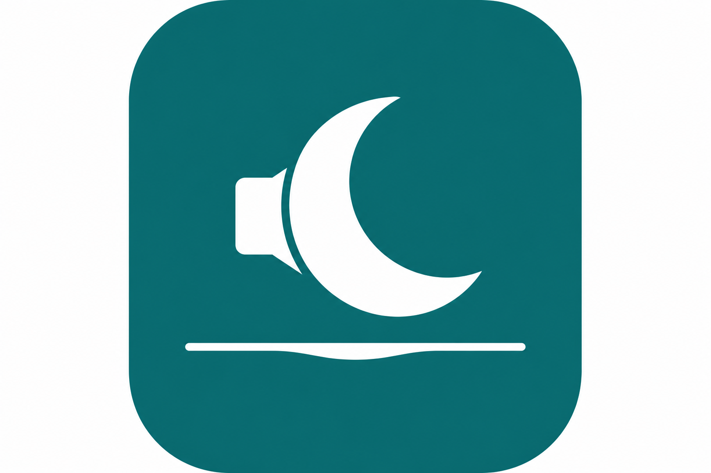

Réglages complets — tout est enregistré localement sur votre appareil.
Cookies : plateformes de consentement et textes associés. Modales : anti-adblock, newsletters, paywalls, etc.
Prudent : sélecteurs intégrés et les vôtres uniquement (pas d’analyse texte des overlays). Max : heuristique complète.
Compteurs agrégés stockés uniquement sur cet appareil (aucun envoi réseau). Chaque « élément masqué » correspond à un nœud caché par le script de contenu. Remise à zéro ou import des stats : tous les onglets ouverts sont notifiés pour vider leur tampon en mémoire (évite de réinjecter d’anciens comptages dans le stockage).
Un nom d’hôte par ligne (ex. www.exemple.fr ou exemple.fr pour inclure les sous-domaines). Quiet Web ne filtre pas ces sites.
Lignes vides ou commençant par // ignorées.
Utilisé en mode Max : si le texte visible contient la chaîne, masquage possible avec garde-fous.
Par défaut : Alt+Shift+Q activer/désactiver globalement, Alt+Shift+R réanalyser l’onglet actif. Vous pouvez les modifier dans le navigateur (Chrome :
chrome://extensions/shortcuts — copiez-collez l’adresse dans la barre d’adresse).
Exportez votre configuration pour la réinstaller ailleurs ou après réinstallation du navigateur. Les imports chargent le formulaire ci-dessus : validez ensuite avec « Enregistrer les réglages » (sauf réinitialisation, qui écrit tout de suite).
Les changements dans cette page ne sont appliqués qu’après clic sur « Enregistrer les réglages ».